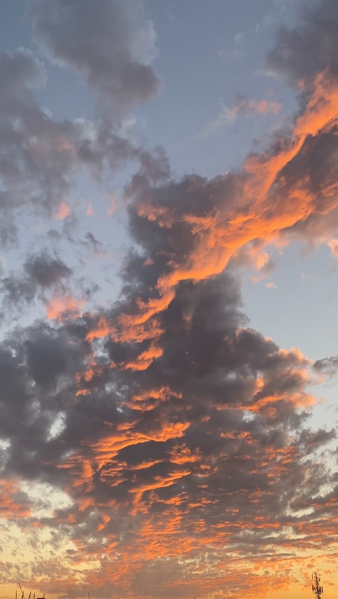

The sky is a vast, ever-changing canvas that stretches infinitely above us, serving as a profound reminder of the Earth's place in the cosmos. By day, it is a brilliant dome of cerulean blue, painted with the shifting shapes of soft, white clouds that drift lazily on atmospheric currents, occasionally gathering into dramatic, gray fortresses that promise life-giving rain. As the sun begins its descent, this blue expanse transforms into a breathtaking theater of color, where vibrant hues of fiery orange, deep crimson, soft pink, and majestic violet bleed into one another in a spectacular farewell to the day. When darkness finally takes over, the sky reveals its ultimate mystery, turning into a deep, velvety void of midnight blue and black, illuminated by the silver glow of the moon and the faint, ancient light of countless twinkling stars and distant galaxies. It is a boundaryless ceiling that inspires dreamers, guides travelers, and connects every living being on the planet under one magnificent, shared horizon.The sky is a vast, ever-changing canvas that stretches infinitely above us, serving as a profound reminder of the Earth's place in the cosmos. By day, it is a brilliant dome of cerulean blue, painted with the shifting shapes of soft, white clouds that drift lazily on atmospheric currents, occasionally gathering into dramatic, gray fortresses that promise life-giving rain. As the sun begins its descent, this blue expanse transforms into a breathtaking theater of color, where vibrant hues of fiery orange, deep crimson, soft pink, and majestic violet bleed into one another in a spectacular farewell to the day. When darkness finally takes over, the sky reveals its ultimate mystery, turning into a deep, velvety void of midnight blue and black, illuminated by the silver glow of the moon and the faint, ancient light of countless twinkling stars and distant galaxies. It is a boundaryless ceiling that inspires dreamers, guides travelers, and connects every living being on the planet under one magnificent, shared horizonThe sky is a vast, ever-changing canvas that stretches infinitely above us, serving as a profound reminder of the Earth's place in the cosmos. By day, it is a brilliant dome of cerulean blue, painted with the shifting shapes of soft, white clouds that drift lazily on atmospheric currents, occasionally gathering into dramatic, gray fortresses that promise life-giving rain. As the sun begins its descent, this blue expanse transforms into a breathtaking theater of color, where vibrant hues of fiery orange, deep crimson, soft pink, and majestic violet bleed into one another in a spectacular farewell to the day. When darkness finally takes over, the sky reveals its ultimate mystery, turning into a deep, velvety void of midnight blue and black, illuminated by the silver glow of the moon and the faint, ancient light of countless twinkling stars and distant galaxies. It is a boundaryless ceiling that inspires dreamers, guides travelers, and connects every living being on the planet under one magnificent, shared horizon.The sky is a vast, ever-changing canvas that stretches infinitely above us, serving as a profound reminder of the Earth's place in the cosmos. By day, it is a brilliant dome of cerulean blue, painted with the shifting shapes of soft, white clouds that drift lazily on atmospheric currents, occasionally gathering into dramatic, gray fortresses that promise life-giving rain. As the sun begins its descent, this blue expanse transforms into a breathtaking theater of color, where vibrant hues of fiery orange, deep crimson, soft pink, and majestic violet bleed into one another in a spectacular farewell to the day. When darkness finally takes over, the sky reveals its ultimate mystery, turning into a deep, velvety void of midnight blue and black, illuminated by the silver glow of the moon and the faint, ancient light of countless twinkling stars and distant galaxies. It is a boundaryless ceiling that inspires dreamers, guides travelers, and connects every living being on the planet under one magnificent, shared horizon. The sky is a vast, ever-changing canvas that stretches infinitely above us, serving as a profound reminder of the Earth's place in the cosmos. By day, it is a brilliant dome of cerulean blue, painted with the shifting shapes of soft, white clouds that drift lazily on atmospheric currents, occasionally gathering into dramatic, gray fortresses that promise life-giving rain. As the sun begins its descent, this blue expanse transforms into a breathtaking theater of color, where vibrant hues of fiery orange, deep crimson, soft pink, and majestic violet bleed into one another in a spectacular farewell to the day. When darkness finally takes over, the sky reveals its ultimate mystery, turning into a deep, velvety void of midnight blue and black, illuminated by the silver glow of the moon and the faint, ancient light of countless twinkling stars and distant galaxies. It is a boundaryless ceiling that inspires dreamers, guides travelers, and connects every living being on the planet under one magnificent, shared horizon..
The sky is a vast, ever-changing canvas that stretches infinitely above us, serving as a profound reminder of the Earth's place in the cosmos. By day, it is a brilliant dome of cerulean blue, painted with the shifting shapes of soft, white clouds that drift lazily on atmospheric currents, occasionally gathering into dramatic, gray fortresses that promise life-giving rain. As the sun begins its descent, this blue expanse transforms into a breathtaking theater of color, where vibrant hues of fiery orange, deep crimson, soft pink, and majestic violet bleed into one another in a spectacular farewell to the day. When darkness finally takes over, the sky reveals its ultimate mystery, turning into a deep, velvety void of midnight blue and black, illuminated by the silver glow of the moon and the faint, ancient light of countless twinkling stars and distant galaxies. It is a boundaryless ceiling that inspires dreamers, guides travelers, and connects every living being on the planet under one magnificent, shared horizon..